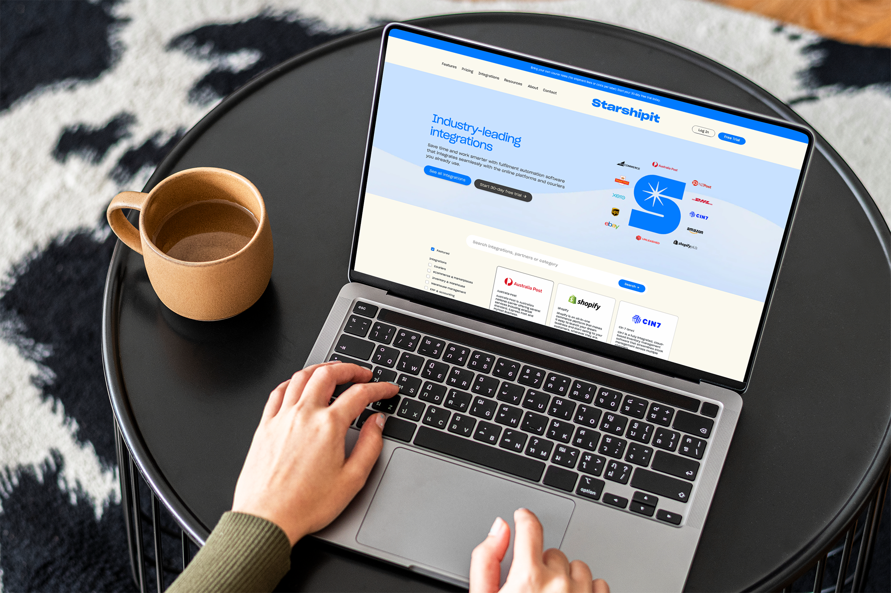
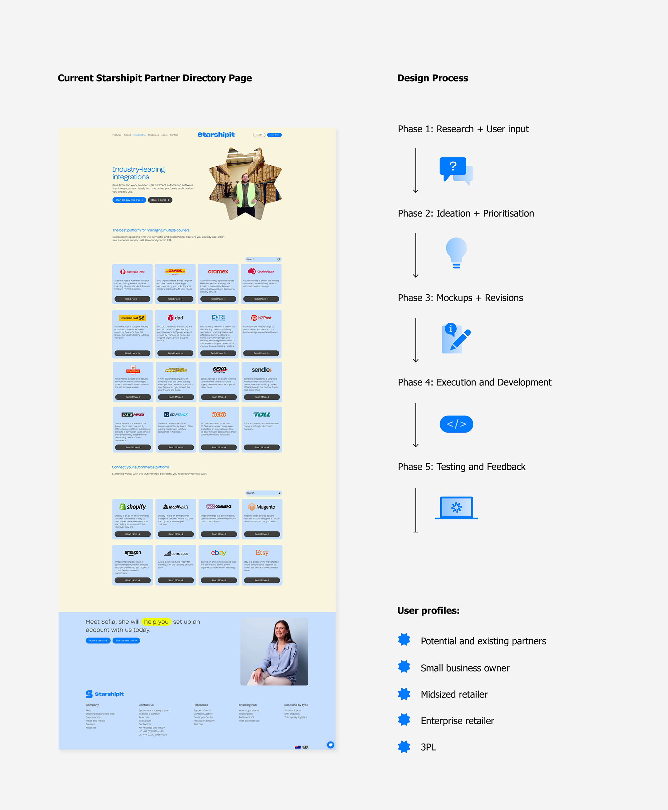
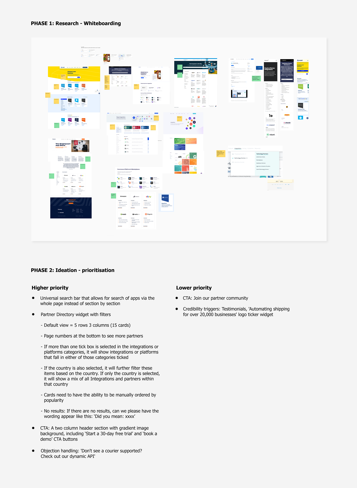
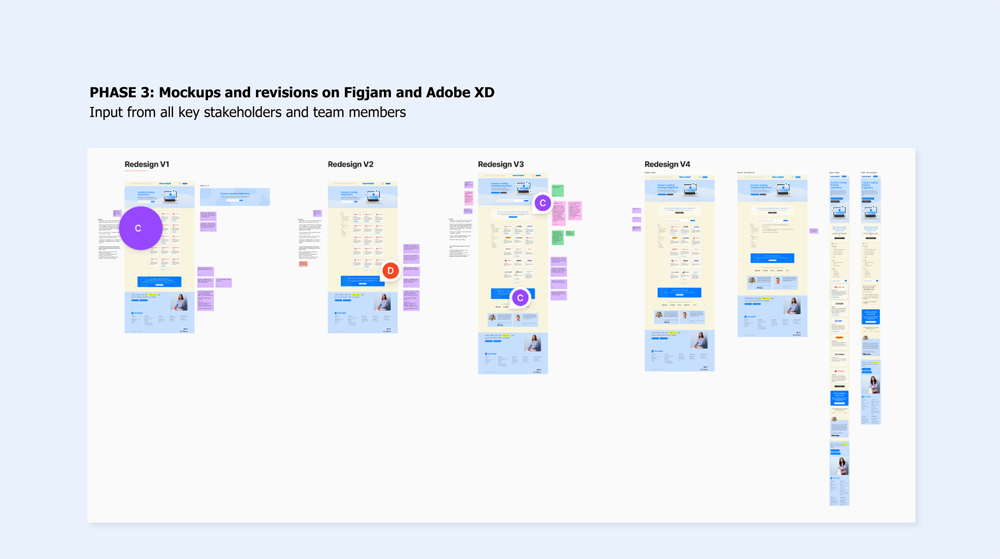
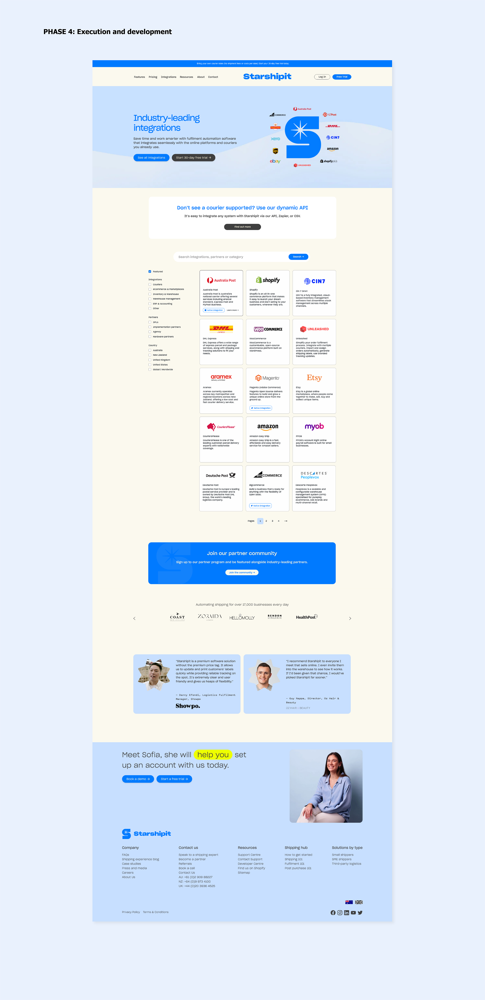

UI / UX project
Starshipit Partner Directory UI Design
Summary
I redesigned Starshipit’s partner directory to make it easier for customers to search integrations while creating stronger visibility and value for partner brands.
The updated experience combined clearer navigation, better filtering, and more lead-generating opportunities for both users and ecosystem partners.
Following the Starshipit rebrand, I led the optimisation of the design and functionality of our website’s partner directory page, transforming it into a more dynamic community and ecosystem.
The goal was to incentivise partners to be showcased on our integrations page, offering them expanded market presence, increased brand association, enhanced customer value, and more exposure for generating top-of-the-funnel leads.
For customers, we wanted to make the page user-friendly so they could easily search for platforms they already use in their day-to-day business, increasing the likelihood of choosing Starshipit as an essential part of their operations.
Challenge
Our current partner directory lacked a universal search bar, making it difficult for users to search for specific platforms. The grouping for 'couriers', 'eCommerce platforms', and 'Warehouse, eCommerce and Inventory' were disjointed with some groups not visible when you landed on the page (so the user had scroll further to see the integration group). The page lacked lead-generating elements, featuring only integration widget cards.
Solution
Our revamped partner directory now boasts significant improvements in user-friendliness, featuring a universal search bar conveniently placed in the header section. A new partner directory widget has been developed, equipped with filter options for 'Integrations,' 'Partners,' and 'Country,' further streamlined into more subgroup checkboxes for easy filtering. I've also included a couple lead generating elements on the page such as credibility triggers, objection handling and CTA's based on feedback from various stakeholders. Original Branding design: Previously Unavailable Website development: New Territory Studio




For over a decade, I’ve been turning ideas into experiences and digital things people actually want to engage with. I work across branding, digital design, marketing, UI/UX, and AI-assisted vibe coding and design workflow. I’m happiest where storytelling, design, and technology overlap as that’s usually where the good stuff happens.